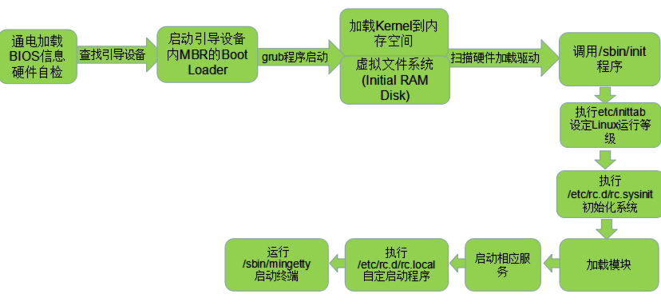
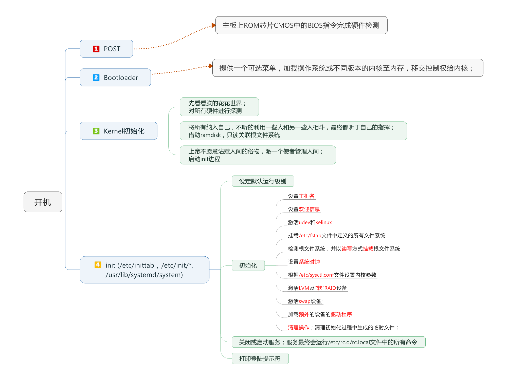

Linux启动流程
Linux启动流程
Linux 系统启动流程大致可分为五个阶段：
- 内核引导
- 运行 init
- 系统初始化
- 建立终端
- 用户登录系统
CentOS 6
CentOS 6 系统 init 程序类型：init
配置文件：/etc/inittab, /etc/init/ *.conf

1 | |
- 第一步：开机自检，加载 BIOS
- 第二步：读取 MBR
- 第三步：Boot Loader grub 引导菜单
- 第四步：加载 kernel 内核
- 第五步：init 进程依据 inittab 文件夹来设定运行级别
- 第六步：init 进程执行 rc.sysinit
- 第七步：启动内核模块
- 第八步：执行不同运行级别的脚本程序
- 第九步：执行 /etc/rc.d/rc.local
CentOS 7
CentOS 7 系统 init 程序类型：systemd
配置文件：/usr/lib/systemd/system、 /etc/systemd/system

- 开机加电自检：检查 bios 中识别的硬件信息是否正常
- 开机 MBR 引导：/boot 分区引导系统启动的记录信息（MBR 引导记录–系统启动文件信息/分区表信息）
- grup 选择菜单：可以选择系统内核信息/可以选择进入单用户模式
- 加载内核信息：用于管理控制硬件
- 启动系统进程：/usr/lib/systemd/systemd — 后续进程启动（并型）
- 加载启动 targe t文件：/etc/systemd/system/default.target — 选择不同级别启动系统
- 加载系统初始化文件：/usr/lib/systemd/system/sysinit.target — 设置主机名称，设置网卡地址信息
- 执行服务运行脚本：/etc/systemd/system 实现服务开机自动运行，/usr/lib/systemd/system/ 保存系统中所有程序启动文件
- 启动 mingetty 进程：显示登录提示信息
总结：开机自检 — 加载 MBR — 加载 grup 菜单 — 加载内核 — 启动第一个服务进程 — 加载运行 target 信息— 加载初始化脚本 — 加载运行文件（实现服务程序开机自启）— 启动 mingetty 进程显示登录界面
本博客所有文章除特别声明外，均采用 CC BY-SA 4.0 协议 ，转载请注明出处！